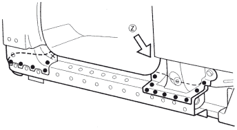
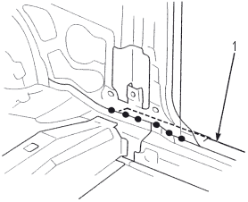
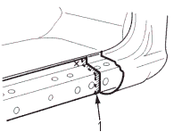
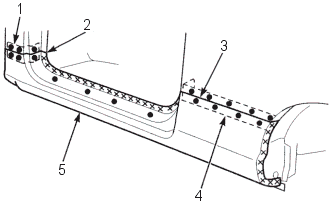
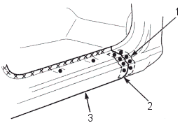

- Cut and set the new side sill reinforcement into position and tack weld the clamped position.
- Cut the repair part (outer panel) and set it into position. Clamp the repair part and check the body dimensions (see section 4).
- Temporarily install the door and front fender and check for differences in level and clearance. Make sure the body lines flow smoothly.
- Remove the repair part and weld the center pillar stiffener, lower side sill reinforcement and front pillar lower stiffener (driver's side).
Driver's side

VIEW (Z)

- NEW SIDE SILL REINFORCEMENT
Passenger's side
When replacing the side sill reinforcement, cut the new side sill reinforcement so it overlaps the body side reinforcement by 20 mm (1.8 in.) and fillet weld it.

- Fillet welding Overlap
20 mm (1.8 in.)
- Clamp the repair part and recheck the clearance and alignment of the door and front fender.
- Perform the main welding:
- Attach a patch at the cut section of the front pillar (driver's side), side sill (passenger's side) and wheel arch and plug weld them.
Driver's side

- PATCH
- Butt welding
- Butt welding
- PATCH
- OUTER PANEL
Passenger's side:

- PATCH
- Butt welding
- OUTER PANEL